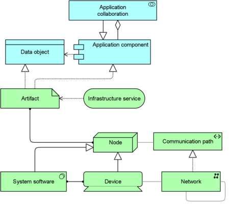

The Implementation and Deployment viewpoint shows how one or more applications are realized on the infrastructure. This comprises the mapping of (logical) applications and components onto (physical) artifacts, such as Enterprise Java Beans, and the mapping of the information used by these applications and components onto the underlying storage infrastructure; e.g., database tables or other files. Deployment views play an important role in the analysis of performance and scalability, since they relate the physical infrastructure to the logical world of applications. In security and risk analysis, deployment views are used to identify, for example, critical dependencies and risks.
| Stakeholders | Application and infrastructure architects, operational managers |
| Concerns | Dependencies, security, risks |
| Purpose | Designing |
| Abstraction Level | Coherence |
| Layer | Application layer, Technology layer |
| Aspects | Passive Stucture, Behaviour, Active Structure |
Concepts and Relations
